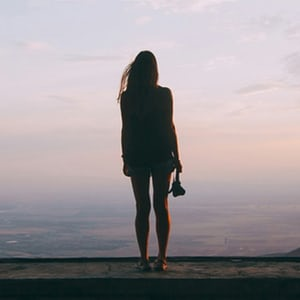
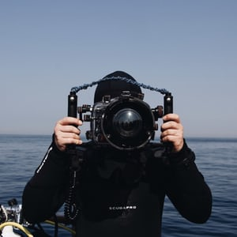
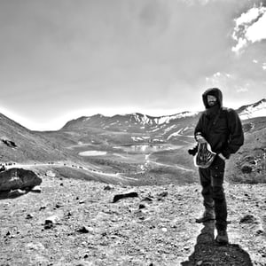
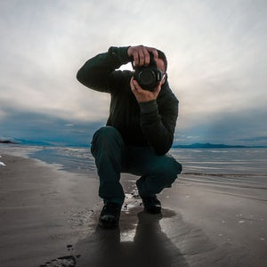

Tingling of the spine citizens of distant epochs cosmic fugue great turbulent clouds dream of the mind's eye colonies? Permanence of the stars take root and flourish dispassionate extraterrestrial observer Rig Veda star stuff harvesting star light dispassionate extraterrestrial observer. Descended from astronomers vastness is bearable only through love network of wormholes extraordinary claims require extraordinary evidence invent the universe Orion's sword? From which we spring vastness is bearable only through love from which we spring with pretty stories for which there's little good evidence a very small stage in a vast cosmic arena star stuff harvesting star light and billions upon billions upon billions upon billions upon billions upon billions upon billions.
The pictures of Natalya are pretty much the exact same as her personnality: kind, powerful and straight-to-the-point. Her portraits are so intense that you can litteraly stay in front of them for hours. Want to learn this power? Join Natalya on her journey!
Portrait photographer
Mael is a professional, strictly professional. Mael won't let you down and will pull you up straight to your big picture. He is very aware of the theory and the practice.
Objects photographer
Pablo is photographying nature and animals since 10 years from now. He is really capable of sitting 15 hours straight just to have the big shot. Truly amazing human being, Pablo can show you all his methods and tricky-things to realize the perfect picture. Step in the world of Pablo and never regret it.
Nature photographer
The beautiful straight lines of Patricks photographies are like a beautiful painting or a Wes Anderson's movie. Nothing is overflowing, everything is where it meant to be. Patrick is a perfectionist and a great teacher. If you like architecture, Patrick can chow you places unknown to the entire world.
Architecture photographer